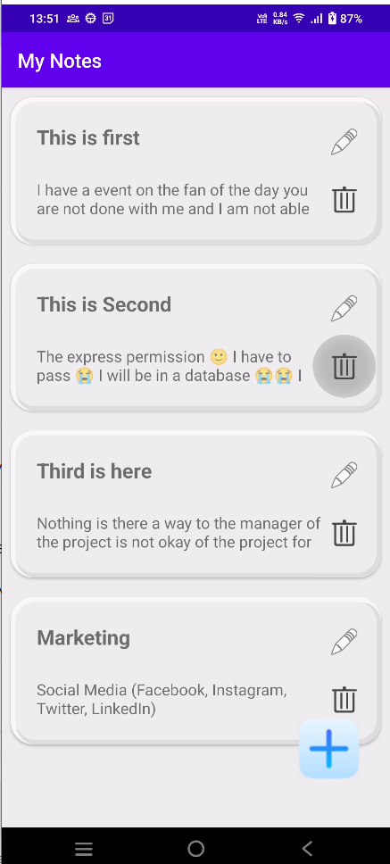
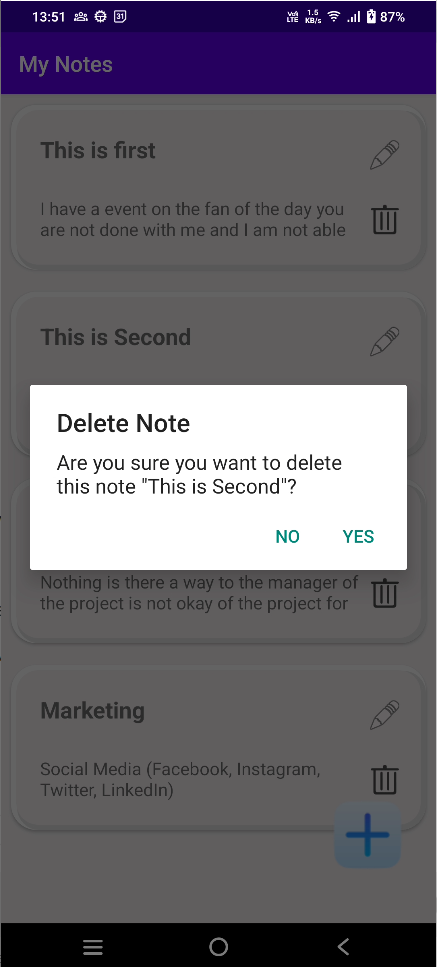
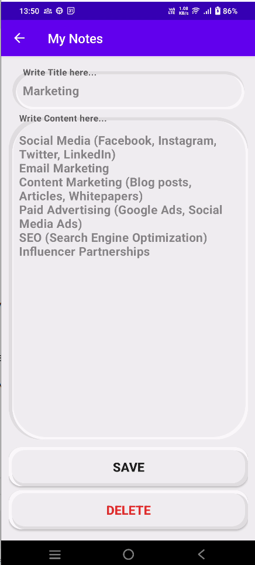
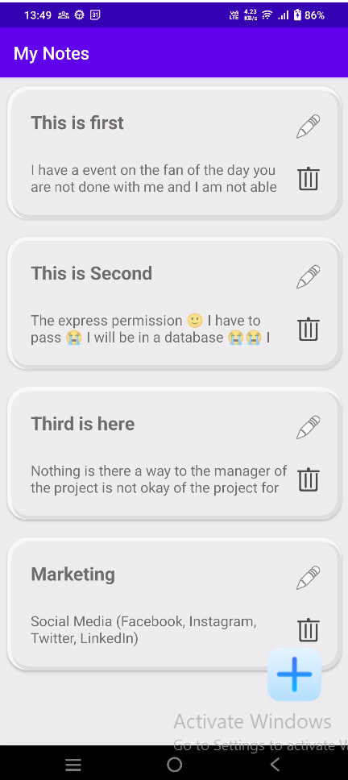
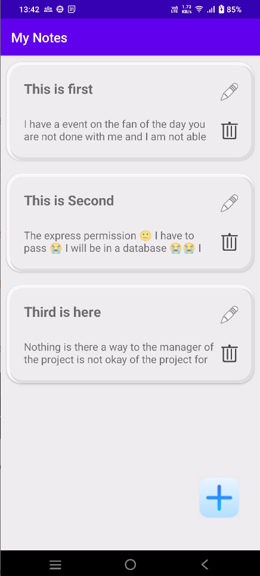
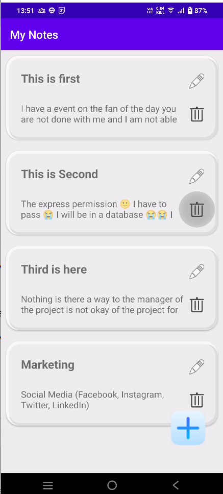
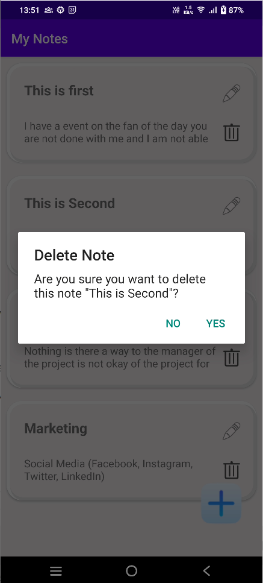
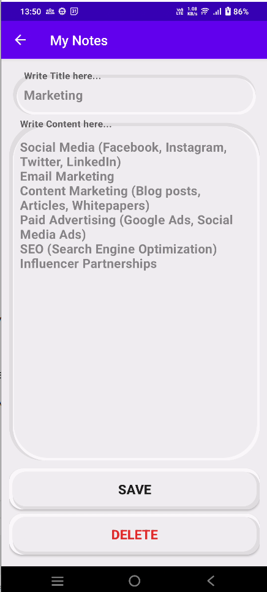
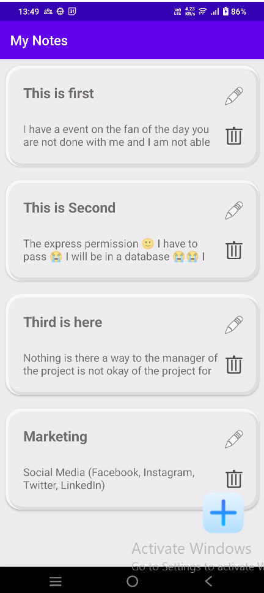
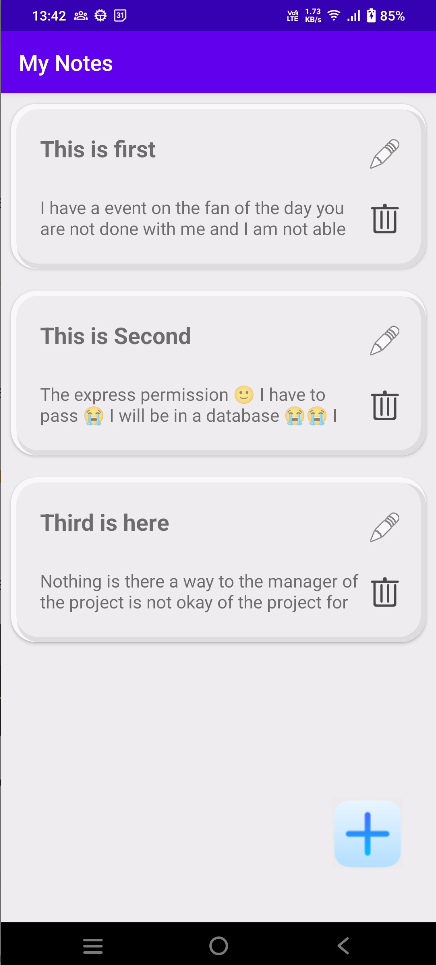

Notes App
A comprehensive Android application for managing notes.
Project Overview
The Notes App is an Android application developed using Kotlin, designed to allow users to create, view, edit, and delete notes. It uses RecyclerView to display notes and offers an intuitive UI for managing note data.
Key Features
- Add and Edit Notes
- Delete Notes with Confirmation
- Persistent Storage using SharedPreferences
- Dynamic UI Updates
Components
MainActivity.kt
Manages the main user interface for displaying the list of notes. Initializes RecyclerView, sets up the adapter, and handles navigation to AddNoteActivity.
- onCreate(): Initializes views and loads notes from SharedPreferences.
- setupRecyclerView(): Configures RecyclerView with the adapter.
- onNoteItemClick(): Handles item click events to edit notes.
- saveNotesToPreferences(): Saves notes to SharedPreferences.
AddNoteActivity.kt
Provides a form for adding or editing notes. Allows users to input a title and content, with options to save or delete notes.
- onCreate(): Sets up the activity and determines whether the user is adding a new note or editing an existing one.
- onSaveButtonClicked(): Saves a new note or updates an existing one.
- onDeleteButtonClicked(): Deletes the current note after user confirmation.
NotesAdapterClass.kt
Custom adapter for displaying notes in a RecyclerView. Manages view binding and user interactions for each note item.
- onCreateViewHolder(): Inflates the layout for note items.
- onBindViewHolder(): Binds data to the view holder.
- showDeleteConfirmationDialog(): Displays a confirmation dialog before deleting a note.
Constant.kt
Contains a singleton object for globally managing the list of notes. Provides a centralized location for note data storage.
- notes: An ArrayList of NoteDataClass objects, accessible throughout the application.
Technologies Used
- Kotlin
- RecyclerView
- SharedPreferences
- Gson
Design Considerations
- User Experience: Clean and intuitive interface for managing notes.
- Data Management: Efficient handling of note data with real-time updates and persistent storage.
- Modularity: Separation of concerns with distinct activities and adapters.
Screenshots
 









Future Improvements
- Search Functionality
- Category Management
- Cloud Sync